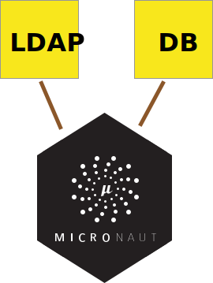
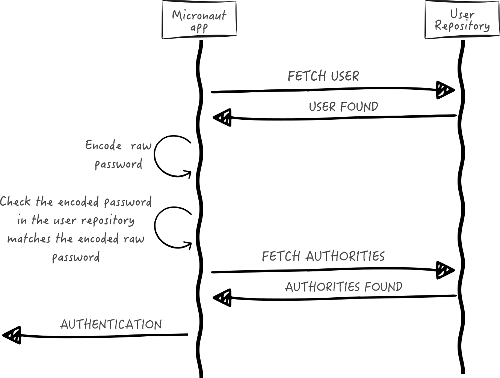

mn create-app example.micronaut.micronautguide \
--features=validation,security-jwt,security-ldap,data-jdbc,jdbc-hikari,h2,spring-security-crypto,reactor \
--build=gradle \
--lang=groovy \
--test=spockLDAP and Database authentication providers
Learn how to create a LDAP and a database authentication provider in a Micronaut Application.
Authors: Sergio del Amo
Micronaut Version: 4.9.1
1. Getting Started
In this guide, we will create a Micronaut application written in Groovy.
The application uses multiple authentication providers; an LDAP and a database authentication provider.

2. What you will need
To complete this guide, you will need the following:
-
Some time on your hands
-
A decent text editor or IDE (e.g. IntelliJ IDEA)
-
JDK 21 or greater installed with
JAVA_HOMEconfigured appropriately
3. Solution
We recommend that you follow the instructions in the next sections and create the application step by step. However, you can go right to the completed example.
-
Download and unzip the source
4. Writing the Application
Create an application using the Micronaut Command Line Interface or with Micronaut Launch.
If you don’t specify the --build argument, Gradle with the Kotlin DSL is used as the build tool. If you don’t specify the --lang argument, Java is used as the language.If you don’t specify the --test argument, JUnit is used for Java and Kotlin, and Spock is used for Groovy.
|
The previous command creates a Micronaut application with the default package example.micronaut in a directory named micronautguide.
If you use Micronaut Launch, select Micronaut Application as application type and add validation, security-jwt, security-ldap, data-jdbc, jdbc-hikari, h2, spring-security-crypto, and reactor features.
| If you have an existing Micronaut application and want to add the functionality described here, you can view the dependency and configuration changes from the specified features, and apply those changes to your application. |
The previous command creates a Micronaut application with the default package example.micronaut in a directory named micronautguide.
| If you have an existing Micronaut application and want to add the functionality described here, you can view the dependency and configuration changes from the specified features, and apply those changes to your application. |
The generated application.properties includes configuration settings that enable security:
src/main/resources/application.properties
micronaut.security.authentication=bearer
micronaut.security.token.jwt.signatures.secret.generator.secret=${JWT_GENERATOR_SIGNATURE_SECRET\:pleaseChangeThisSecretForANewOne}| 1 | Set micronaut.security.authentication as bearer |
| 2 | You can create a SecretSignatureConfiguration named generator via configuration as illustrated above. The generator signature is used to sign the issued JWT claims. |
| 3 | Change this to your own secret and keep it safe (do not store this in your VCS) |
4.1. Security LDAP
The Micronaut framework supports authentication with LDAP out of the box.
We will use the open Debian LDAP service for this guide.
Create the configuration properties matching those of the LDAP Server.
src/main/resources/application.properties
(2)
micronaut.security.ldap.default.context.server=ldaps://db.debian.org
(3)
micronaut.security.ldap.default.context.managerDn=cn=read-only-admin,dc=debian,dc=org
(4)
micronaut.security.ldap.default.context.managerPassword=password
(5)
micronaut.security.ldap.default.search.base=dc=debian,dc=org
(6)
micronaut.security.ldap.default.groups.enabled=true
(7)
micronaut.security.ldap.default.groups.base=dc=debian,dc=org| 1 | LDAP authentication in the Micronaut framework supports configuration of one or more LDAP servers to authenticate with. You need to name each one. In this tutorial, we use default. |
| 2 | Each server has its own settings and can be enabled or disabled. |
| 3 | Sets the manager DN |
| 4 | Sets the manager password. |
| 5 | Sets the base DN to search. |
| 6 | Enable group search. |
| 7 | Sets the base DN to search from. |
4.2. Micronaut Data JDBC
Add Micronaut Data JDBC dependencies to the project:
build.gradle
compileOnly("io.micronaut.data:micronaut-data-processor")
implementation("io.micronaut.data:micronaut-data-jdbc")
implementation("io.micronaut.sql:micronaut-jdbc-hikari")
runtimeOnly("com.h2database:h2")And the database configuration:
src/main/resources/application.properties
datasources.default.password=
datasources.default.dialect=H2
datasources.default.schema-generate=CREATE_DROP
datasources.default.url=jdbc\:h2\:mem\:devDb;LOCK_TIMEOUT\=10000;DB_CLOSE_ON_EXIT\=FALSE
datasources.default.username=sa
datasources.default.driver-class-name=org.h2.Driver4.2.1. Entities
A domain class fulfills the M in the Model View Controller (MVC) pattern and represents a persistent entity that is mapped onto an underlying database table.
User
Create a UserState interface to model the user state.
src/main/groovy/example/micronaut/UserState.groovy
package example.micronaut
interface UserState {
String getUsername()
String getPassword()
boolean isEnabled()
boolean isAccountExpired()
boolean isAccountLocked()
boolean isPasswordExpired()
}Create User domain class to store users within our application.
src/main/groovy/example/micronaut/domain/User.groovy
package example.micronaut.domain
import example.micronaut.UserState
import io.micronaut.data.annotation.MappedEntity
import io.micronaut.serde.annotation.Serdeable
import jakarta.persistence.GeneratedValue
import jakarta.persistence.Id
import jakarta.validation.constraints.NotBlank
@Serdeable (1)
@MappedEntity (2)
class User implements UserState {
@Id (3)
@GeneratedValue (4)
Long id
@NotBlank
String email
@NotBlank
String username
@NotBlank
String password
boolean enabled
boolean accountExpired
boolean accountLocked
boolean passwordExpired
}| 1 | Declare the @Serdeable annotation at the type level in your source code to allow the type to be serialized or deserialized. |
| 2 | Annotate the class with @MappedEntity to map the class to the table defined in the schema. |
| 3 | Specifies the ID of an entity |
| 4 | Specifies that the property value is generated by the database and not included in inserts |
Role
Create Role domain class to store authorities within our application.
src/main/groovy/example/micronaut/domain/Role.groovy
package example.micronaut.domain
import io.micronaut.data.annotation.MappedEntity
import jakarta.persistence.GeneratedValue
import jakarta.persistence.Id
import jakarta.validation.constraints.NotBlank
import io.micronaut.serde.annotation.Serdeable
@Serdeable (1)
@MappedEntity (2)
class Role {
@Id (3)
@GeneratedValue (4)
Long id
@NotBlank
String authority
}| 1 | Declare the @Serdeable annotation at the type level in your source code to allow the type to be serialized or deserialized. |
| 2 | Annotate the class with @MappedEntity to map the class to the table defined in the schema. |
| 3 | Specifies the ID of an entity |
| 4 | Specifies that the property value is generated by the database and not included in inserts |
UserRole
Create a UserRole which stores a many-to-many relationship between User and Role.
src/main/groovy/example/micronaut/domain/UserRole.groovy
package example.micronaut.domain
import io.micronaut.data.annotation.EmbeddedId
import io.micronaut.data.annotation.MappedEntity
import io.micronaut.serde.annotation.Serdeable
@Serdeable (1)
@MappedEntity (2)
class UserRole {
@EmbeddedId (3)
private UserRoleId userRoleId
UserRole(UserRoleId userRoleId) {
this.userRoleId = userRoleId
}
UserRoleId getUserRoleId() {
return userRoleId
}
}| 1 | Declare the @Serdeable annotation at the type level in your source code to allow the type to be serialized or deserialized. |
| 2 | Annotate the class with @MappedEntity to map the class to the table defined in the schema. |
| 3 | Composite primary keys can be defined using @EmbeddedId annotation. |
src/main/groovy/example/micronaut/domain/UserRoleId.groovy
package example.micronaut.domain
import groovy.transform.EqualsAndHashCode
import io.micronaut.core.annotation.Creator
import jakarta.persistence.Embeddable
import io.micronaut.serde.annotation.Serdeable
@EqualsAndHashCode
@Serdeable (1)
@Embeddable (2)
class UserRoleId {
final Long userId
final Long roleId
@Creator (3)
UserRoleId(Long userId,
Long roleId) {
this.userId = userId
this.roleId = roleId
}
UserRoleId() {
}
}| 1 | Declare the @Serdeable annotation at the type level in your source code to allow the type to be serialized or deserialized. |
| 2 | Specifies that the bean is embeddable. |
| 3 | Annotate with @Creator to provide a hint as to which constructor is the primary constructor. |
4.2.2. JDBC Repositories
Create various JDBC Repositories:
src/main/groovy/example/micronaut/UserJdbcRepository.groovy
package example.micronaut
import example.micronaut.domain.User
import io.micronaut.data.jdbc.annotation.JdbcRepository
import io.micronaut.data.model.query.builder.sql.Dialect
import io.micronaut.data.repository.CrudRepository
@JdbcRepository(dialect = Dialect.H2) (1)
interface UserJdbcRepository extends CrudRepository<User, Long> { (2)
Optional<User> findByUsername(String username)
}| 1 | @JdbcRepository with a specific dialect. |
| 2 | By extending CrudRepository you enable automatic generation of CRUD (Create, Read, Update, Delete) operations. |
src/main/groovy/example/micronaut/RoleJdbcRepository.groovy
package example.micronaut
import example.micronaut.domain.Role
import io.micronaut.data.jdbc.annotation.JdbcRepository
import io.micronaut.data.model.query.builder.sql.Dialect
import io.micronaut.data.repository.CrudRepository
@JdbcRepository(dialect = Dialect.H2) (1)
interface RoleJdbcRepository extends CrudRepository<Role, Long> { (2)
Role save(String authority)
Optional<Role> findByAuthority(String authority)
}| 1 | @JdbcRepository with a specific dialect. |
| 2 | By extending CrudRepository you enable automatic generation of CRUD (Create, Read, Update, Delete) operations. |
src/main/groovy/example/micronaut/UserRoleJdbcRepository.groovy
package example.micronaut
import example.micronaut.domain.UserRole
import example.micronaut.domain.UserRoleId
import io.micronaut.data.annotation.Query
import io.micronaut.data.jdbc.annotation.JdbcRepository
import io.micronaut.data.model.query.builder.sql.Dialect
import io.micronaut.data.repository.CrudRepository
@JdbcRepository(dialect = Dialect.H2) (1)
interface UserRoleJdbcRepository extends CrudRepository<UserRole, UserRoleId> { (2)
@Query("""SELECT role_.`authority` FROM `role` role_
inner join `user_role` user_role_ ON user_role_.`user_role_id_role_id` = role_.`id`
inner join `user` user_ ON user_role_.`user_role_id_user_id` = user_.`id`
where user_.`username` = :username""") (2)
List<String> findAllAuthoritiesByUsername(String username)
}| 1 | @JdbcRepository with a specific dialect. |
| 2 | By extending CrudRepository you enable automatic generation of CRUD (Create, Read, Update, Delete) operations. |
| 3 | You can use the @Query annotation to specify an explicit query. |
4.3. Password Encoder
Create an interface to handle password encoding:
src/main/groovy/example/micronaut/PasswordEncoder.groovy
package example.micronaut
import io.micronaut.core.annotation.NonNull
import jakarta.validation.constraints.NotBlank
interface PasswordEncoder {
String encode(@NotBlank @NonNull String rawPassword)
boolean matches(@NotBlank @NonNull String rawPassword,
@NotBlank @NonNull String encodedPassword)
}To provide an implementation, first include a dependency to Spring Security Crypto to ease password encoding.
Add the dependencies:
build.gradle
implementation("org.springframework.security:spring-security-crypto:6.2.0")
implementation("org.slf4j:jcl-over-slf4j")Then, write the implementation:
src/main/groovy/example/micronaut/BCryptPasswordEncoderService.groovy
package example.micronaut
import groovy.transform.CompileStatic
import io.micronaut.core.annotation.NonNull
import org.springframework.security.crypto.bcrypt.BCryptPasswordEncoder
import org.springframework.security.crypto.password.PasswordEncoder as SpringSecurityPasswordEncoder
import jakarta.inject.Singleton
import jakarta.validation.constraints.NotBlank
@CompileStatic
@Singleton (1)
class BCryptPasswordEncoderService implements PasswordEncoder {
SpringSecurityPasswordEncoder delegate = new BCryptPasswordEncoder()
String encode(@NotBlank @NonNull String rawPassword) {
delegate.encode(rawPassword)
}
@Override
boolean matches(@NotBlank @NonNull String rawPassword,
@NotBlank @NonNull String encodedPassword) {
delegate.matches(rawPassword, encodedPassword)
}
}| 1 | Use jakarta.inject.Singleton to designate a class as a singleton. |
4.4. Register Service
We will register a user when the application starts up.
Create RegisterService
src/main/groovy/example/micronaut/RegisterService.groovy
package example.micronaut
import example.micronaut.domain.Role
import example.micronaut.domain.User
import example.micronaut.domain.UserRole
import example.micronaut.domain.UserRoleId
import groovy.transform.CompileStatic
import jakarta.inject.Singleton
import jakarta.transaction.Transactional
import jakarta.validation.constraints.Email
import jakarta.validation.constraints.NotBlank
@CompileStatic
@Singleton
class RegisterService {
private final RoleJdbcRepository roleGormService
private final UserJdbcRepository userGormService
private final UserRoleJdbcRepository userRoleGormService
private final PasswordEncoder passwordEncoder
RegisterService(RoleJdbcRepository roleGormService,
UserJdbcRepository userGormService,
PasswordEncoder passwordEncoder,
UserRoleJdbcRepository userRoleGormService) {
this.roleGormService = roleGormService
this.userGormService = userGormService
this.userRoleGormService = userRoleGormService
this.passwordEncoder = passwordEncoder
}
@Transactional
void register(@Email String email, @NotBlank String username,
@NotBlank String rawPassword, List<String> authorities) {
User user = userGormService.findByUsername(username).orElse(null)
if (!user) {
final String encodedPassword = passwordEncoder.encode(rawPassword)
user = userGormService.save(new User(email: email, username: username, password: encodedPassword, enabled: true, accountExpired: false, accountLocked: false, passwordExpired: false))
}
if (user && authorities) {
for (String authority : authorities) {
Role role = roleGormService.findByAuthority(authority).orElseGet(() -> roleGormService.save(authority))
UserRoleId userRoleId = new UserRoleId(user.id, role.id)
if (userRoleGormService.findById(userRoleId).isEmpty()) {
userRoleGormService.save(new UserRole(userRoleId))
}
}
}
}
}Update the Application class to be an event listener, and use RegisterService to create a user:
src/main/groovy/example/micronaut/Application.groovy
package example.micronaut
import groovy.transform.CompileStatic
import io.micronaut.context.event.ApplicationEventListener
import io.micronaut.runtime.Micronaut
import io.micronaut.runtime.server.event.ServerStartupEvent
import jakarta.inject.Singleton
@CompileStatic
@Singleton
class Application implements ApplicationEventListener<ServerStartupEvent> { (1)
private final RegisterService registerService
Application(RegisterService registerService) { (2)
this.registerService = registerService
}
@Override
void onApplicationEvent(ServerStartupEvent event) { (1)
registerService.register('sherlock@micronaut.example', 'sherlock', 'elementary', ['ROLE_DETECTIVE']) (3)
}
static void main(String[] args) {
Micronaut.run Application, args
}
}| 1 | Implements ServerStartupEvent which enables executing a method when the application starts. |
| 2 | Use constructor injection to inject a bean of type RegisterService. |
| 3 | Register a new user when the application starts. |
4.5. Delegating Authentication Provider
We will set up a AuthenticationProvider as described in the next diagram.

Next, we create interfaces and implementations for each of the pieces of the previous diagram.
4.5.1. User Fetcher
Create an interface to retrieve a UserState given a username.
src/main/groovy/example/micronaut/UserFetcher.groovy
package example.micronaut
import io.micronaut.core.annotation.NonNull
import jakarta.validation.constraints.NotBlank
interface UserFetcher {
Optional<UserState> findByUsername(@NotBlank @NonNull String username)
}Provide an implementation:
src/main/groovy/example/micronaut/UserFetcherService.groovy
package example.micronaut
import io.micronaut.core.annotation.NonNull
import groovy.transform.CompileStatic
import jakarta.inject.Singleton
import jakarta.validation.constraints.NotBlank
@CompileStatic
@Singleton (1)
class UserFetcherService implements UserFetcher {
private final UserJdbcRepository userGormService
UserFetcherService(UserJdbcRepository userGormService) { (2)
this.userGormService = userGormService
}
@Override
Optional<UserState> findByUsername(@NotBlank @NonNull String username) {
userGormService.findByUsername(username).map(it -> it as UserState)
}
}| 1 | Use jakarta.inject.Singleton to designate a class as a singleton. |
| 2 | UserJdbcRepository is injected via constructor injection. |
4.5.2. Authorities Fetcher
Create an interface to retrieve roles given a username.
src/main/groovy/example/micronaut/AuthoritiesFetcher.groovy
package example.micronaut
interface AuthoritiesFetcher {
List<String> findAuthoritiesByUsername(String username)
}Provide an implementation:
src/main/groovy/example/micronaut/AuthoritiesFetcherService.groovy
package example.micronaut
import jakarta.inject.Singleton
import groovy.transform.CompileStatic
@CompileStatic
@Singleton (1)
class AuthoritiesFetcherService implements AuthoritiesFetcher {
private final UserRoleJdbcRepository userRoleGormService
AuthoritiesFetcherService(UserRoleJdbcRepository userRoleGormService) { (2)
this.userRoleGormService = userRoleGormService
}
@Override
List<String> findAuthoritiesByUsername(String username) {
userRoleGormService.findAllAuthoritiesByUsername(username)
}
}| 1 | Use jakarta.inject.Singleton to designate a class as a singleton. |
| 2 | UserRoleJdbcRepository is injected via constructor injection. |
4.5.3. Authentication Provider
Create an authentication provider which uses the interfaces you wrote in the previous sections.
src/main/groovy/example/micronaut/DelegatingAuthenticationProvider.groovy
package example.micronaut
import io.micronaut.core.annotation.Nullable
import io.micronaut.core.annotation.NonNull
import io.micronaut.http.HttpRequest
import io.micronaut.scheduling.TaskExecutors
import io.micronaut.security.authentication.AuthenticationException
import io.micronaut.security.authentication.AuthenticationFailed
import io.micronaut.security.authentication.AuthenticationRequest
import io.micronaut.security.authentication.AuthenticationResponse
import io.micronaut.security.authentication.provider.HttpRequestReactiveAuthenticationProvider
import reactor.core.publisher.FluxSink
import reactor.core.publisher.Flux
import reactor.core.scheduler.Scheduler
import reactor.core.scheduler.Schedulers
import org.reactivestreams.Publisher
import jakarta.inject.Named
import jakarta.inject.Singleton
import java.util.concurrent.ExecutorService
import static io.micronaut.security.authentication.AuthenticationFailureReason.ACCOUNT_EXPIRED
import static io.micronaut.security.authentication.AuthenticationFailureReason.ACCOUNT_LOCKED
import static io.micronaut.security.authentication.AuthenticationFailureReason.CREDENTIALS_DO_NOT_MATCH
import static io.micronaut.security.authentication.AuthenticationFailureReason.PASSWORD_EXPIRED
import static io.micronaut.security.authentication.AuthenticationFailureReason.USER_DISABLED
import static io.micronaut.security.authentication.AuthenticationFailureReason.USER_NOT_FOUND
@Singleton
class DelegatingAuthenticationProvider<B> implements HttpRequestReactiveAuthenticationProvider<B> {
private final UserFetcher userFetcher
private final PasswordEncoder passwordEncoder
private final AuthoritiesFetcher authoritiesFetcher
private final Scheduler scheduler
DelegatingAuthenticationProvider(UserFetcher userFetcher,
PasswordEncoder passwordEncoder,
AuthoritiesFetcher authoritiesFetcher,
@Named(TaskExecutors.BLOCKING) ExecutorService executorService) { (1)
this.userFetcher = userFetcher
this.passwordEncoder = passwordEncoder
this.authoritiesFetcher = authoritiesFetcher
this.scheduler = Schedulers.fromExecutorService(executorService)
}
@Override
@NonNull
Publisher<AuthenticationResponse> authenticate(
@Nullable HttpRequest<B> requestContext,
@NonNull AuthenticationRequest<String, String> authenticationRequest
) {
Flux.create({ emitter ->
UserState user = fetchUserState(authenticationRequest)
AuthenticationFailed authenticationFailed = validate(user, authenticationRequest)
if (authenticationFailed) {
emitter.error(new AuthenticationException(authenticationFailed))
} else {
emitter.next(createSuccessfulAuthenticationResponse(user))
emitter.complete()
}
}, FluxSink.OverflowStrategy.ERROR)
.subscribeOn(scheduler) (2)
}
private AuthenticationFailed validate(UserState user, AuthenticationRequest authenticationRequest) {
AuthenticationFailed authenticationFailed = null
if (!user) {
authenticationFailed = new AuthenticationFailed(USER_NOT_FOUND)
} else if (!user.enabled) {
authenticationFailed = new AuthenticationFailed(USER_DISABLED)
} else if (user.accountExpired) {
authenticationFailed = new AuthenticationFailed(ACCOUNT_EXPIRED)
} else if (user.accountLocked) {
authenticationFailed = new AuthenticationFailed(ACCOUNT_LOCKED)
} else if (user.passwordExpired) {
authenticationFailed = new AuthenticationFailed(PASSWORD_EXPIRED)
} else if (!passwordEncoder.matches(authenticationRequest.secret.toString(), user.password)) {
authenticationFailed = new AuthenticationFailed(CREDENTIALS_DO_NOT_MATCH)
}
authenticationFailed
}
private UserState fetchUserState(AuthenticationRequest authRequest) {
final String username = authRequest.identity
userFetcher.findByUsername(username).orElse(null)
}
private AuthenticationResponse createSuccessfulAuthenticationResponse(UserState user) {
List<String> authorities = authoritiesFetcher.findAuthoritiesByUsername(user.username)
AuthenticationResponse.success(user.username, authorities)
}
}| 1 | The configured I/O executor service is injected |
| 2 | subscribeOn method schedules the operation on the I/O thread pool |
| It is critical that any blocking I/O operations (such as fetching the user from the database in the previous code sample) are offloaded to a separate thread pool that does not block the Event loop. |
4.6. LDAP Authentication Provider test
Create a test to verify an LDAP user can log in.
src/test/groovy/example/micronaut/LoginLdapSpec.groovy
package example.micronaut
import io.micronaut.http.HttpRequest
import io.micronaut.http.HttpResponse
import io.micronaut.http.client.HttpClient
import io.micronaut.http.client.annotation.Client
import io.micronaut.http.client.exceptions.HttpClientResponseException
import io.micronaut.security.authentication.UsernamePasswordCredentials
import io.micronaut.security.token.jwt.validator.ReactiveJsonWebTokenValidator
import io.micronaut.security.token.render.AccessRefreshToken
import io.micronaut.security.token.Claims;
import io.micronaut.test.extensions.spock.annotation.MicronautTest
import reactor.core.publisher.Flux
import org.reactivestreams.Publisher
import spock.lang.Ignore
import spock.lang.Shared
import spock.lang.Specification
import jakarta.inject.Inject
import static io.micronaut.http.HttpMethod.POST
import static io.micronaut.http.MediaType.APPLICATION_JSON_TYPE
@MicronautTest (1)
class LoginLdapSpec extends Specification {
@Inject
@Client('/')
HttpClient client (2)
@Shared
@Inject
ReactiveJsonWebTokenValidator tokenValidator (3)
void '/login with valid credentials returns 200 and access token and refresh token'() {
when:
HttpRequest request = HttpRequest.create(POST, '/login')
.accept(APPLICATION_JSON_TYPE)
.body(new UsernamePasswordCredentials('sherlock', 'elementary')) (4)
HttpResponse<AccessRefreshToken> rsp = client.toBlocking().exchange(request, AccessRefreshToken)
then:
rsp.status.code == 200
rsp.body.present
rsp.body.get().accessToken
}
@Ignore('TODO fix the timeout issue')
void '/login with invalid credentials returns UNAUTHORIZED'() {
when:
HttpRequest request = HttpRequest.create(POST, '/login')
.accept(APPLICATION_JSON_TYPE)
.body(new UsernamePasswordCredentials('euler', 'bogus')) (4)
client.toBlocking().exchange(request)
then:
HttpClientResponseException e = thrown()
e.status.code == 401 (5)
}
void 'access token contains expiration date'() {
when:
HttpRequest request = HttpRequest.create(POST, '/login')
.accept(APPLICATION_JSON_TYPE)
.body(new UsernamePasswordCredentials('sherlock', 'elementary')) (4)
HttpResponse<AccessRefreshToken> rsp = client.toBlocking().exchange(request, AccessRefreshToken)
then:
rsp.status.code == 200
rsp.body.present
when:
String accessToken = rsp.body.get().accessToken
then:
accessToken
when:
Publisher authentication = tokenValidator.validateToken(accessToken, request) (6)
then:
Flux.from(authentication).blockFirst()
and: 'access token contains an expiration date'
Flux.from(authentication).blockFirst().attributes.get(Claims.EXPIRATION_TIME)
}
}| 1 | Annotate the class with @MicronautTest so the Micronaut framework will initialize the application context and the embedded server. More info. |
| 2 | Inject the HttpClient bean and point it to the embedded server. |
| 3 | Inject the TokenValidator bean. |
| 4 | Creating HTTP Requests is easy thanks to the Micronaut framework fluid API. |
| 5 | If you attempt to access a secured endpoint without authentication, 401 is returned |
| 6 | Use the tokenValidator bean previously injected. |
4.7. Login Testing
Test /login endpoint. We verify both LDAP and DB authentication providers work.
src/test/groovy/example/micronaut/LoginControllerSpec.groovy
package example.micronaut
import io.micronaut.http.HttpRequest
import io.micronaut.http.HttpResponse
import io.micronaut.http.client.HttpClient
import io.micronaut.http.client.annotation.Client
import io.micronaut.http.client.exceptions.HttpClientResponseException
import io.micronaut.security.authentication.Authentication
import io.micronaut.security.authentication.UsernamePasswordCredentials
import io.micronaut.security.token.jwt.validator.ReactiveJsonWebTokenValidator
import io.micronaut.security.token.render.AccessRefreshToken
import io.micronaut.test.extensions.spock.annotation.MicronautTest
import reactor.core.publisher.Flux
import spock.lang.Shared
import spock.lang.Specification
import jakarta.inject.Inject
import static io.micronaut.http.HttpMethod.POST
import static io.micronaut.http.MediaType.APPLICATION_JSON_TYPE
@MicronautTest
class LoginControllerSpec extends Specification {
@Inject
@Client('/')
HttpClient client
@Shared
@Inject
ReactiveJsonWebTokenValidator tokenValidator
@Inject
UserJdbcRepository userGormService
void 'attempt to access /login without supplying credentials server responds BAD REQUEST'() {
when:
HttpRequest request = HttpRequest.create(POST, '/login')
.accept(APPLICATION_JSON_TYPE)
client.toBlocking().exchange(request)
then:
HttpClientResponseException e = thrown()
e.status.code == 400
}
void '/login with valid credentials for a database user returns 200 and access token'() {
expect:
userGormService.count() > 0
when:
HttpRequest request = HttpRequest.create(POST, '/login')
.accept(APPLICATION_JSON_TYPE)
.body(new UsernamePasswordCredentials('sherlock', 'elementary'))
HttpResponse<AccessRefreshToken> rsp = client.toBlocking().exchange(request, AccessRefreshToken)
then:
noExceptionThrown()
rsp.status.code == 200
rsp.body.present
rsp.body.get().accessToken
when:
String accessToken = rsp.body.get().accessToken
Authentication authentication = Flux.from(tokenValidator.validateToken(accessToken, request)).blockFirst()
then:
authentication.attributes
authentication.attributes.containsKey('roles')
authentication.attributes.containsKey('iss')
authentication.attributes.containsKey('exp')
authentication.attributes.containsKey('iat')
}
}5. Testing the Application
To run the tests:
./gradlew testThen open build/reports/tests/test/index.html in a browser to see the results.
6. Running the Application
To run the application, use the ./gradlew run command, which starts the application on port 8080.
7. Next Steps
Explore more features with Micronaut Guides.
8. Help with the Micronaut Framework
The Micronaut Foundation sponsored the creation of this Guide. A variety of consulting and support services are available.
9. License
| All guides are released with an Apache license 2.0 license for the code and a Creative Commons Attribution 4.0 license for the writing and media (images…). |